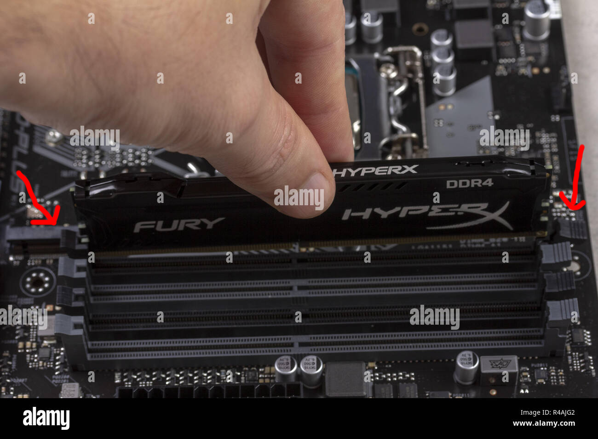

Pentru această problemă, eu am găsit două rezolvări, destul de simple. Este posibil ca unul sau mai multe module RAM să fie stricate și să fie înlocuite. Ca în imaginea de jos, pe fiecare parte a unui modul o să fie două leviere care se pot coborî (pe unele plăci de bază există doar un astfel de levier). Odată apăsate, puteți să trageți modulul RAM afară. O să repetați această acțiune pentru toate modulele în caz de aveți mai multe.
Acum introduceți doar un modul și verificați dacă atunci când porniți calculatorul dacă se afișează o imagine pe ecran. Dacă tot nu pornește monitorul repetați pasul de mai sus, dar schimbați locația unde introduceți modulul RAM.
Dacă după toate posibilitățile de combinare nu rezultă într-o imagine pe ecran, putem să deducem două concluzii.
Concluzia I
Una sau toate plăcuțele RAM sunt stricate, ceea ce înseamnă că va trebui să cumpărați altele noi (recomand să cumpărați aceleași module pentru a fi sigur că vor funcționa).
Concluzia II
Placa de bază s-a stricat și va trebui sa cumpărați una nouă (pentru aceasta vă recomand să gasiți o persoană de specialitate).